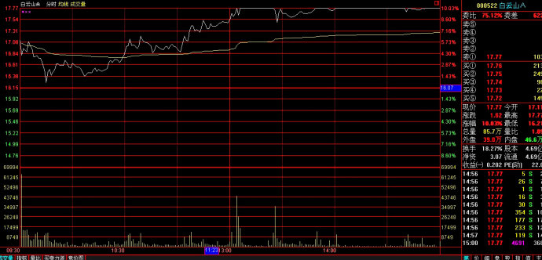
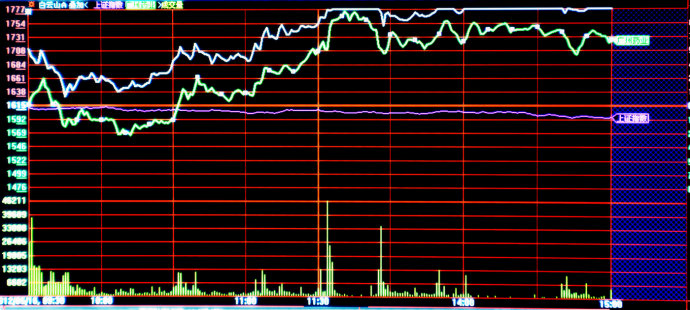
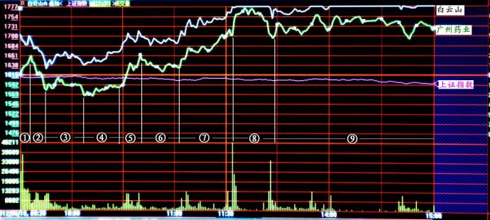

第169篇•对广州药业和白云山走势的深度分析（3）
谷为陵
今天，在大盘大跌的情况下，白云山和广州药业却尽显强势，逆势大涨。其中，白云山几乎涨停，而广州药业的涨幅也达6.8%。两只股票在昨天还放量大跌，今天为何又能单日反转，尽收昨日失地呢？
今天两只股票的大涨，应该有两个相互依存的原因：一是广州药业跌不下去，对白云山的股价形成支撑；二是在广州药业跌不动的情况下，白云山因存在较大的套利空间而率先强势上攻，这反过来又带动了广州药业的上涨，最终形成联袂上涨的局面。
现在我就来分析一下这两只股票今日的分时走势图，看看各路市场投资者都是怀着怎样的心态进行这场惊心动魄的博弈的。
由于今天是白云山领涨，我就重点分析一下白云山的走势。下面的图1是白云山的分时走势图。我先提个问题：你先仔细看看图1，静静地思考一分钟，白云山为什么会走出这样的走势？

下面的图2是白云山、广州药业和上证指数三者叠加分时图。我还要提个问题：你仔细看看图2，再静静地思考一分钟，白云山为什么会走出这样的走势？

好了，我现在就来解析一下今天白云山的走势。下面的图3是白云山、广州药业和上证指数三者叠加分时图。我将全天的走势分为了如下的9个阶段，以带圈的数字表示在图中。

我就来分别解释这9个阶段走势的含义：
1、阶段①：白云山高开
开盘：在上证指数低开的情况下，白云山却高开了近6%，这一是因受到昨天有三只基金抢进的消息刺激，二是因市场已经知道了白云山现在股价含有约20%的套利空间，于是开盘就抢。我注意到，在9点24分时，白云山还只是在16.7元处集合进价，但至9点25分开盘时，其开盘价格突然被一个260万股的大买盘直接推高到了17.11元，最终高开5.9%。我认为这个大买盘是一家机构所为，够猛的。广州药业几乎是平开的，可见市场的注意力都集中在了白云山上面。
开盘后5分钟：令人不解的是，虽然白云山高开很多，但一开盘后就遭到大卖盘的疯狂打压，仅仅5分钟的时间，白云山就成交了1170万股，除去开盘的260万股，净成交910万股。这么大的抛盘是谁卖出的？由于白云山高开很多，尽管高开后有些走低，但还是拉动广州药业股价在开盘5分钟内后上涨了3%。受到广州药业股价配合上涨的刺激，白云山的股价在被打压后呈现了一波小反弹，几乎再次触及开盘价，但是，卖压依然非常沉重，股价无法创出盘中新高。
2、阶段②：白云山跳水
在白云山股价无法创出盘中新高的情况下，白云山的股价就开始了一轮快速的跳水，股价几乎被打回昨天的收盘价。在这10分钟的时间里，卖盘量也达到了800万股，还是抛盘汹涌。从这15分钟的交易情况看，一定是有大机构或者大户在疯狂出货。在白云山跳水的带动下，广州药业的股价也最终翻绿，下跌了近2%。
3、阶段③：广州药业破位，白云山显出独立性。
在经过阶段②的快速跳水后，两只股票都暂时止跌，进入了一个振荡区间。但可以看出，这种振荡是一种弱势振荡，买盘不强，在这种情况下，只要再次出现大卖盘，股价还有可能创出盘中新低。我以前说过，“涨要看强势股，跌要看弱势股”。今天，在这两只股票中，白云山属于强势股，而广州药业属于弱势股，所以，这两只股票还能不能继续下跌，就要看广州药业股价的表现了。
果然，处于弱势的广州药业在本阶段的末端，又创出了一个盘中新低，由此也带动白云山股价下跌了一段，但令人惊奇的是，这次白云山的股价却没有创出盘中新低，这可是一个非常重要的转折信号！
为什么这样说呢？这是因为，在此之前，白云山的股价都是跟着广州药业走的，几乎是亦步亦趋，即使白云山今天高开，但股价几乎瞬间就被打回原形，说明其走势还没有呈现独立性。但就是在这时候，白云山的股价不再跟随广州药业创出盘中新低了，这说明白云山股价走势已经开始出现了独立性。这个独立性为什么会出现呢？就是因为白云山的那个较大的折价空间，抑制了白云山股价的继续大跌。在这个时候，价值分析开始发挥了作用，事实证明，在市场上谁也不傻。
4、阶段④和⑤：广州药业止跌，白云山强势上攻。
也许是因为白云山拒绝跟随广州药业创出新低，还也许是广州药业本身价值所在，反正广州药业股价在此期间企稳了，而这给了白云山以巨大鼓舞，白云山开始了一轮强势上攻，一举创出盘中新高，涨幅接近7%。在白云山大涨的带动下，广州药业股价也翻红，并上涨了约3%。至此，这两只股票今天必将大涨，甚至是涨停板的格局已经非常清晰和明显。
为什么这样说呢？这是因为，今天白云山高开和上涨的原动力，主要是那个较大的折价或者说套利空间。这个套利空间有没有，有多大，不取决于白云山，而完全取决于广州药业的股价到底是多少。这是一场博弈：若广州药业股价下跌到17元，那么，白云山的股价最多只能够呆在16元；若广州药业股价维持在20元以上，那么，白云山的股价可以涨到19元以上。
现在的情况是，由于广州药业的暂时止跌，导致白云山走上了填补套利空间之路。但随着白云山的上涨，广州药业也开始联动上涨，这就将白云山的套利空间再一次增大，使得白云山股价的上涨增添了更大的“原动力”！这两只股票的你追我赶，就像是展开了一场猫抓老鼠的游戏，难道真的有超级主力在这样玩吗？
5、阶段⑥和⑦：联袂上攻
由于广州药业翻红，增大了白云山的套利空间，因此，白云山就在没有任何顾忌，其强势特征终于显露，至上午收盘时几乎涨停板。广州药业也是一路跟随上涨，形成联袂上攻态势。
6、阶段⑧和⑨：白云山涨停板，广州药业涨6.8%。
尽管在下午上证指数开始了加速下跌，但白云山却在下午一开盘就封上了涨停板，而广州药业最高也上涨了9%，至收盘时股价略微回落，最终上涨了6.8%。
我今天通过剖析分时图，揭示了白云山股价上涨的原因。白云山股价大涨的根本原因，就是那个套利空间在起作用，只要广州药业股价不大跌，白云山股价就还有上涨空间。
今晚我看了一下龙虎榜，白云山今天有两家基金在卖出，看其成交额，有点像昨天刚进场的那两家基金。若真是这样的话，那白云山一开盘就遭巨量卖盘砸盘，就应该是这些基金干的。难道基金也和游资一样，热衷于玩“一日游”吗？我真的为这些平日里倡导价值投资的基金感到羞耻，也为基民们感到悲哀。《缠中说禅》博主李彪曾大声疾呼：摧毁基金！我虽没有这样激进，但看到去年基金业巨亏5100亿元，但基金从业人员照样拿高薪，且很多基金业热衷于打短线（其中有一只基金去年换手率高达20倍，真是匪夷所思），与价值投资相去甚远，我也不得不怀疑这些基金有何存在的必要性了。
总之，白云山和广州药业股价的走势，是一场大的博弈：广州药业与加多宝的凉茶品牌与市场博弈、投资者与上市公司的博弈、不同投资者（游资、基金与其他投资者）之间的博弈。这场博弈并非在短期内就能看到明确结果，应该是在中长期才能够看出结果的，这样一来就更有意思了，正如当年的重庆啤酒的乙肝疫苗题材被炒了10年一样，在没有最终结果出来之前，市场的博弈将会一直持续，直至达到白热化的程度。我认为，好戏也许还在后头。
但愿我今天的长篇分时图分析，能够对你今后看盘有所裨益。